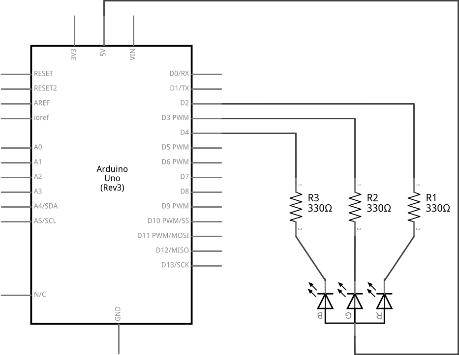
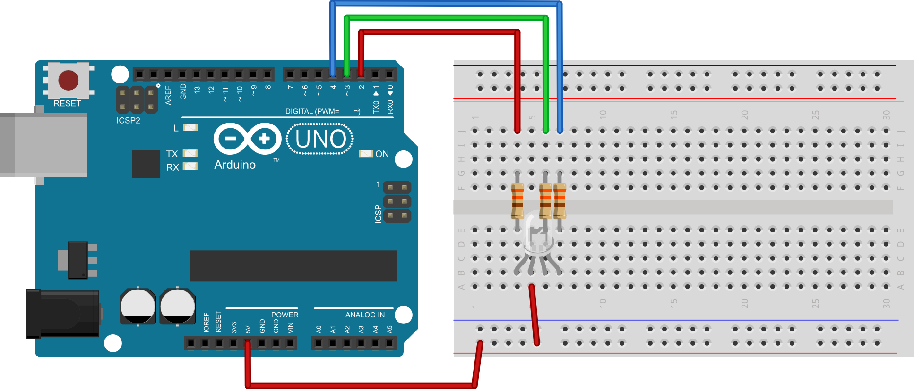

POGLAVLJE 3 - Zadatak 10:
Na mikrokontroler spojite jednu RGB svjetleću diodu. Napišite program koji će redom uključivati segmente diode. Na početku je uključen crveni segment, potom crveni i zeleni, pa zeleni, nakon toga zeleni i plavi i na kraju samo plavi. Pogledajte promjene boja koje se zbivaju i uključite druge kombinacije boja i promatrajte koje boje dobivate. Neka je svaka kombinacija uključena pet sekundi.
SHEMA:

EKSPERIMENTALNA PLOČICA:

RJEŠENJE:
int ledR = 2; //definiraj ledR = 2 int ledG = 3; //definiraj ledG = 3 int ledB = 4; //definiraj ledB = 4 void setup() { pinMode(ledR, OUTPUT); //postavi izvod ledR kao izlazni pinMode(ledG, OUTPUT); //postavi izvod ledG kao izlazni pinMode(ledB, OUTPUT); //postavi izvod ledB kao izlazni digitalWrite(ledR, HIGH); //isključi crveni segment - početno stanje digitalWrite(ledG, HIGH); //isključi zeleni segment - početno stanje digitalWrite(ledB, HIGH); //isključi plavi segment - početno stanje } void loop() { digitalWrite(ledR, LOW); //uključi crveni segment delay(5000); //čekaj 5 s - svjetli R digitalWrite(ledG, LOW); //uključi zeleni segment delay(5000); //čekaj 5 s - svjetli R+G digitalWrite(ledR, HIGH); //isključi crveni segment delay(5000); //čekaj 5 s - svjetli G digitalWrite(ledB, LOW); //uključi plavi segment delay(5000); //čekaj 5 s - svjetli G+B digitalWrite(ledG, HIGH); //isključi zeleni segment delay(5000); //čekaj 5 s - svjetli B digitalWrite(ledB, HIGH); //isključi plavi segment }